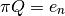
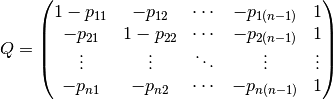
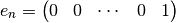

psc585.markov¶
Code written for PSC 585: Dynamic and Computational Models, Spring 2011
- class psc585.markov.TestKosaraju[source]¶
Test algorithms against known results
Use on command line as py.test dfs.py
Methods
- psc585.markov.binary2int(x)[source]¶
Convert binary array to integer
Parameters : x : ndarray
Array with the binary representation of a number
Returns : y : int
Decimal integer
- psc585.markov.cftp(P, T=1, u=None)[source]¶
Single draw with coupling from the past
Parameters : P : (n, n) ndarray
Transition matrix
T : int
Number of iterations
u : (t <= T, ) ndarray
Draws from a uniform distribution
Returns : X : int
State
T : int
Number of iterations until convergence
- psc585.markov.cftp_sample(P, n=1)[source]¶
Sample with coupling from the past
Parameters : P : (N, N) ndarray
Transition matrix
n : int, optional
Number of draws from the distribution
Returns : X : (n, ) ndarray
Draws from the invariant distribution of P
Notes
Calls cftp n times to get n draws from the invariant distribution of P using the coupling from the past algorithm.
- psc585.markov.dfs(P, order=None)[source]¶
Depth first search
Parameters : P : array, shape (n, n)
Stochastic transition matrix
order : array, shape (n, ), optional
Order in which to search the nodes.
Returns : F : array, shape (n, )
Time of first visit
L : array, shape (n, )
Time of last visit
G : array, shape (n, n)
Graph of minimum spanning tree. Entries have a value of 1 if there is an edge between i and j, and 0 if there is not.
- psc585.markov.gjacobi(A, b, x, maxit=1000, tol=1e-11, normalizer=None)[source]¶
Gauss-Jacobi iterative linear solver for sparse matrices
Parameters : A : sparse matrix, shape (n, n)
Left hand side of linear system.
b : array, array (n, )
Right hand side of linear system.
x : array, array (n, )
On entry, x holds the initial guess. On exit x holds the final solution.
tol : float
Requested error tolerance for convergence.
maxit : :
Maximum number of iterations.
Returns : info : int
Exit status. 0 if converged. -1 if it did not.
iter : int
Number of iterations
relres : float
total variance norm of the final solution.
Notes
Code based on gjacobi in the compecon Matlab toolbox.
- psc585.markov.gseidel(A, b, x, maxit=1000, tol=1e-12, relax=1.0, normalizer=None)[source]¶
Gauss-Jacobi iterative linear solver for sparse matrices
Parameters : A : sparse matrix, shape (n, n)
Left hand side of linear system.
b : array, array (n, )
Right hand side of linear system.
x : array, array (n, )
On entry, x holds the initial guess. On exit x holds the final solution.
tol : float, optional
Requested error tolerance for convergence.
maxit : int, optional
Maximum number of iterations.
relax : float, optional
Relaxation parameter. Default is 1 in Gauss-Seidel. Set to values of less than or greater to 1 for under or over relaxation.
Returns : info : int
Exit status. 0 if converged. -1 if it did not.
iter : int
Number of iterations
relres : float
total variance norm of the final solution.
See also
Notes
Code based on gseidel in the compecon Matlab toolbox.
- psc585.markov.ilu0_factor(a)[source]¶
Incomplete LU Factorization
Parameters : a: array, shape (M, M) :
Matrix to decompose
Returns : lu : array, shape(M, M)
Matrix containing U in its upper triangle and L in its lower triangle.
Notes
Uses the ILU(0) algorithm. Algorithm 2.3 in PSC 585 class notes.n
There exist other preconditioners in scipy.linalg and scipy.linalg.sparse but I could not find which one corresponded to ilu(0).
This is too slow to be useful.
- psc585.markov.int2binary(x, width=32)[source]¶
Convert integer to binary array
Parameters : x : int
width : int
Width of binary representation.
Returns : y : (width, ) ndarray
Vector of boolean values for binary representation.
- psc585.markov.invariant_direct_solver(P)[source]¶
Calculate Invariant Distribution by direct methods
Parameters : P : ndarray, shape (n, n)
Transition matrix of a discrete Markov Chain
Returns : x : ndarray, shape(n, )
Invariant distribution of the Markov Chain
Notes
The invariant distribution of a Markov Chain P satisfies
Since the matrix I - P is singular, instead solve the linear system

where

and

- <<<<<<< HEAD psc585.markov.invariant_integral(f, n, qw=<function newton_cotes at 0x3304938>)[source]¶ ======= psc585.markov.invariant_integral(f, n, qw=<function newton_cotes at 0x4d55e60>)[source]¶ >>>>>>> github/gh-pages
Solve Integral equation by quadrature approximation
Parameters : f : function
State transition function
n : int
Number of quadrature nodes
qw : function, optional
Function to calculate the location and weights of the quadrature nodes
Returns : g : (n, ) ndarray
Solutions to integral equation
x : (n, ) ndarray
Quadrature nodes
w : (n, ) ndarray
Quadrature weights
Notes
Solves for g(s) where
with the system of linear equations

and

- psc585.markov.kosaraju(P)[source]¶
Kosaraju’s Algorithm for Strongly Connected Components
Parameters : P : array, shape (n, n)
Must be bool or integer.
Returns : list : list
Each element of the list is a component of the graph. Each component is a list of length two. The first element in the component is a list of the states in that component. The second element in the component is a boolean indicating whether the component is an ergodic set.
Notes
The typical Kosaraju algorithm is modified to return the ergodic sets and transient set of a Markov chain transition matrix.
- class psc585.markov.lookahead(f, fsample, init, T)[source]¶
Look-ahead estimator of an invariant distribution
Parameters : f : function
Transition function for a continuous state Markov Chain
fsample: function :
Function to draw directly from transition function given the current state.
init : (m, ) ndarray
Initial values for each chain. The number of chains to run is determined by the dimensions of this array.
T : int
Number of iterations to run each chain.
Attributes
chains ndarray, shape (m, d) Sample of points from running m chains for T iterations. Methods
- psc585.markov.multinomial(u, pvals)[source]¶
Draw from multinomial
Parameters : u : float
Number in 0, 1 interval
pvals : (k, ) ndarray
Probability mass function of a discrete distribution
Returns : y : int
- psc585.markov.newton_cotes(n, a=0.0, b=1.0)[source]¶
1-dimensional Newton-Cotes Quadrature Midpoint Rule
Parameters : n : int
Number of quadrature points.
a : float
Lower bound of interval to integrate over.
b : float
Upper bound of interval to integrate over.
Returns : x : (n, ) ndarray
Nodes
w : (n, ) ndarray
Weights for each node
Quadrature points and weights derived using Newton-Cotes with :
the midpoint rule formula. See Judd, p. 252-253. :
- psc585.markov.newton_cotes_d(n, a=None, b=None)[source]¶
d-dimensional Newton-Cotes Quadrature
Parameters : n: (d, ) ndarray :
Number of quadrature nodes in each dimension
a: (d, ) ndarray :
Lower bound in each dimension
b: (d, ) ndarray :
Upper bound in each dimension
Returns : x : (n.prod(), d) ndarray
Quadrature nodes
w : (n.prod(), ) ndarray
Quadrature weights
Notes
Generates quadrature nodes and weights in d-dimensions using the Newton-Cotes midpoint rule.
- psc585.markov.power_iteration(P, x=None, tol=1e-15, T=1000)[source]¶
Solve for Invariant Distribution of a Markov Chain by Power Iteration
Parameters : P : ndarray, shape (N, N)
Transition matrix of a discrete Markov Chain
x : ndarray, shape (N, )
Initial guess for the invariant distribution
tol : float, optional
Convergence tolerance
T : int, optional
Maximum number of iterations
Returns : x : ndarray, shape (N, )
Invariant distribution
t : int
Number of iterations
eps : float
Final residual error
Notes
Solves for the invariant distribution of a Markov Chain using the iterative scheme
- psc585.markov.qnwcheb1(n, a, b)[source]¶
Univariate Gauss-Chebyshev quadrature nodes and weights
Parameters : n : int
number of nodes
a : float
left endpoint
b : float
right endpoint
Returns : x : array, shape (n,)
nodes
x : array, shape (n,)
weights
Notes
Port of the qnwcheb1 function in the compecon matlab toolbox.
- psc585.markov.qnwnorm(n, mu=None, var=None)[source]¶
Compute nodes and weights for multivariate normal distribution
Parameters : n : (d, ) ndarray
Array of the number of quadrature nodes for each dimension.
mu : (d, ) ndarray, optional
Distribution mean
var : (d, d) ndarray, optional
Distribution covariance matrix
Returns : x : (n.prod(), d) ndarray
Quadrature nodes.
x : (n.prod(), ) ndarray
Quadrature weights
Notes
Port of qnwnorm function in the compecon matlab toolbox.
- psc585.markov.qnwnorm1(n)[source]¶
Gauss-Hermite normal quadrature nodes and weights in 1 dimension
Parameters : n : int
Number of quadrature nodes
Returns : x : (n, ) ndarray
Quadrature nodes
w : (n, ) ndarray
Quadrature weights
- psc585.markov.sparse_power_iteration(P, x, tol=1e-15, maxiter=200)[source]¶
Preconditioned power iteration for a sparse stochastic matrix
Parameters : P : array, shape (n, n), sparse
transition matrix of a Markov Chain
x : array, shape (n, )
On entry, the initial guess. On exit, the final solution.
- psc585.markov.spectral_gap(A)[source]¶
Spectral gap
The spectral gap is the difference between the two largest eigenvalues of matrix.
- <<<<<<< HEAD psc585.markov.to_discrete(f, n, qw=<function newton_cotes at 0x3304938>)[source]¶ ======= psc585.markov.to_discrete(f, n, qw=<function newton_cotes at 0x4d55e60>)[source]¶ >>>>>>> github/gh-pages
Discretize Continuous Markov Chain
Parameters : f: function :
Transition function.
n: array, shape (d, ) :
Number of discrete states.
qw: function :
Function to use to calculate discrete states.
Returns : P : array, (n.prod(), n.prod())
Discrete Markov chain transition matrix. Where p_ij in the matrix means p(s_j | s_i).
x : array, shape (n.prod(), d)
quadrature nodes
w : array, shape (n.prod(), )
quadrature weights